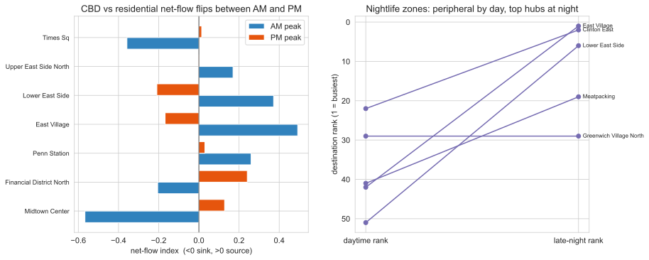
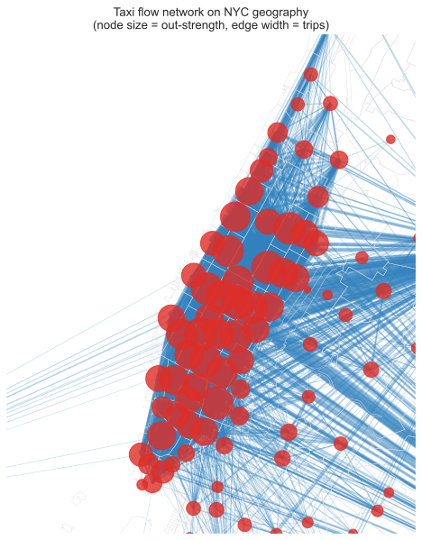

Transportation Flow Network: 142 million NYC taxi trips as a graph
The East Village is the 42nd most popular place to be dropped off in New York during the morning commute. After midnight it is the first. That single reversal is the kind of thing 142 million taxi trips will tell you once you stop treating them as rows in a table and start treating them as a network: where the city actually ends is not where its grid does, and where it goes changes with the hour.
In 2015 New York's yellow cabs made roughly 146 million trips. After cleaning, this project keeps 142,199,201 of them (97.4%) and collapses every trip into a single directed, weighted graph: 263 TLC taxi zones as nodes, an edge from pickup zone to drop-off zone weighted by how many people made that journey across the year. The full graph has 262 active nodes and 42,347 edges. That is the entire object of study, and almost everything below is a question you can only ask once the trips are a graph rather than a spreadsheet.
This is a 2021 rebuild of a 2016-17 student project. The original asked good questions and answered some of them with hand-waving. The rebuild keeps the questions, regenerates every figure from the raw 2015 parquet, and is honest where the data is thin. One caveat up front: yellow taxis over-sample Manhattan and the airports, so this is a map of where cabs go, not where the whole city moves. The 2015 trip files were already re-coded to taxi zones with no latitude and longitude, so the nodes here are zones, not the finer census tracts the 2016 version used.
Where Manhattan ends
Fit a gravity model to the flows, the same physics-borrowed idea that big places pull hard and distance pushes back, and the interesting part is not the fit. It is the residual. A doubly-constrained model controls for each zone's own volume and its distance to everywhere else, then asks which zones are still busier or quieter than their position predicts. Decay exponent \(\beta = 1.15\), and the model reproduces 82% of observed flow (common part of commuters). What is left over draws a second, functional map of Manhattan.

Read that map and Manhattan stops being a single dense mass. Its commercial spine runs over-connected and red; whole residential neighborhoods that look central on paper behave like the edge of the network. The findings page walks through the most under-connected zones and what they have in common.
The city has two shapes a day
Average a year of flow and most zones look balanced: as many people leave as arrive. Slice the same network by time of day and the balance collapses into a clean reversal. In the morning, Midtown and the Financial District are sinks, pulling commuters in; after work they become sources, pushing them out. The East Village and the Lower East Side are the exact mirror image, and the morning-versus-night top-hub lists barely overlap (Jaccard 0.2).

A handful of zones do most of the work
The network is steeply unequal, and unequal in two different ways. Midtown Center receives about 22,900 trips per distinct source zone; JFK Airport receives only about 4,510. Both are hubs, but they are hubs of different kinds. Inner-city draws like Midtown and Penn Station pull enormous volume from a small set of Manhattan origins. The airports pull from many scattered origins across all five boroughs: high in-degree, low trips-per-source. Drawn on real geography, the whole system leans hard into the Manhattan core.

Three ways in
The rest of the site is split by what you came for.
MethodHow the 142 million trips became a graph: the cleaning that dropped 2.6% of rows, why the nodes are zones, how the gravity model is fit and made non-circular, and how the four communities survive 100 random seeds. The reproducible-pipeline story lives on the method page.
FindingsEvery result with its figure and its caveat: the gravity residual, the day and night reversal, the hub asymmetry, distance decay, the disparity-filter backbone that keeps 87.6% of trips on a tenth of the edges, and the daily-rhythm clusters. A network-science layer adds robustness, scale-free, and null-model tests, and a 10-year pass shows the geometry holding steady through a 71% COVID collapse: the fleet shrank by two-thirds, but distance decay, efficiency, and community structure barely moved (global efficiency CV 0.004). Start at the findings page.
Live mapThe network in your browser: 263 zones and the 600 heaviest origin-destination edges on an interactive Leaflet map, recolorable by community, net flow, and time of day. If you would rather poke at the data than read about it, go straight to the live map.
Start with the map
Every claim on this site is a pattern you can find yourself. The fastest way to believe the day and night reversal, or to see exactly where the blue zones sit, is to open the network and recolor it. Open the live map and switch the coloring to net flow at late night, then watch downtown light up.